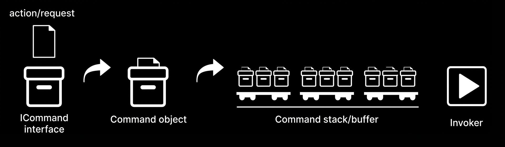
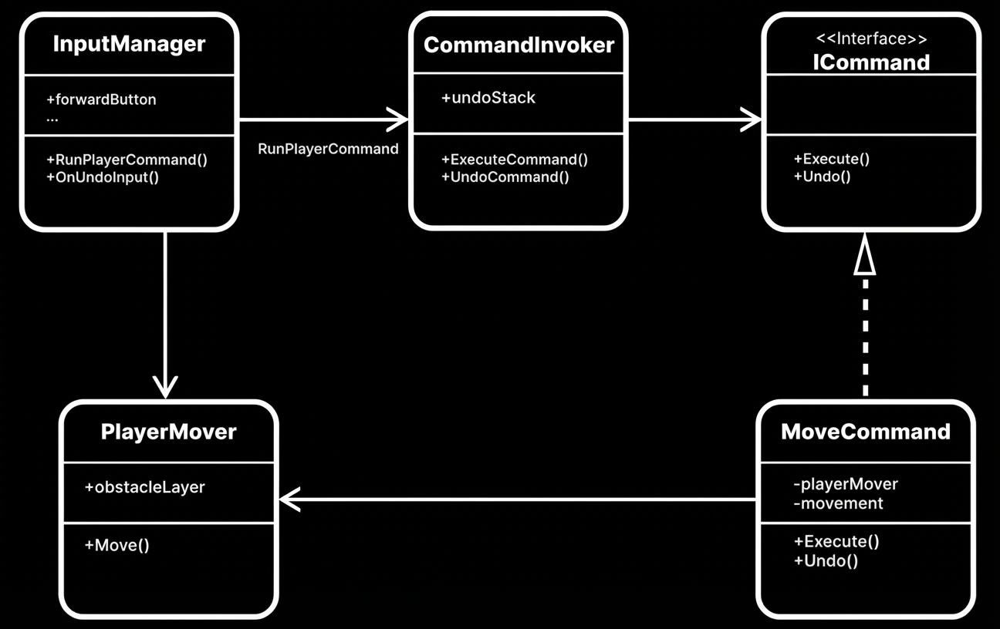
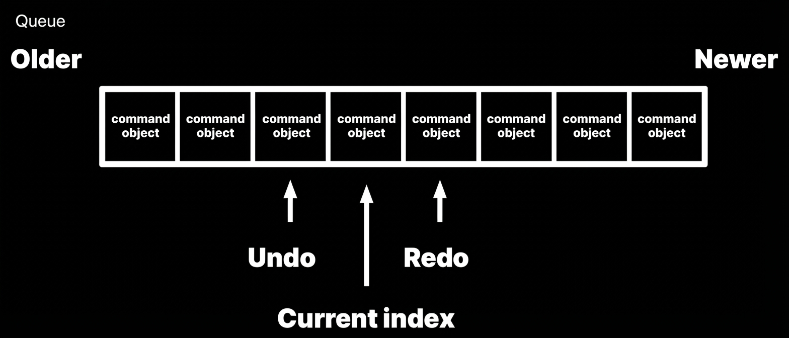
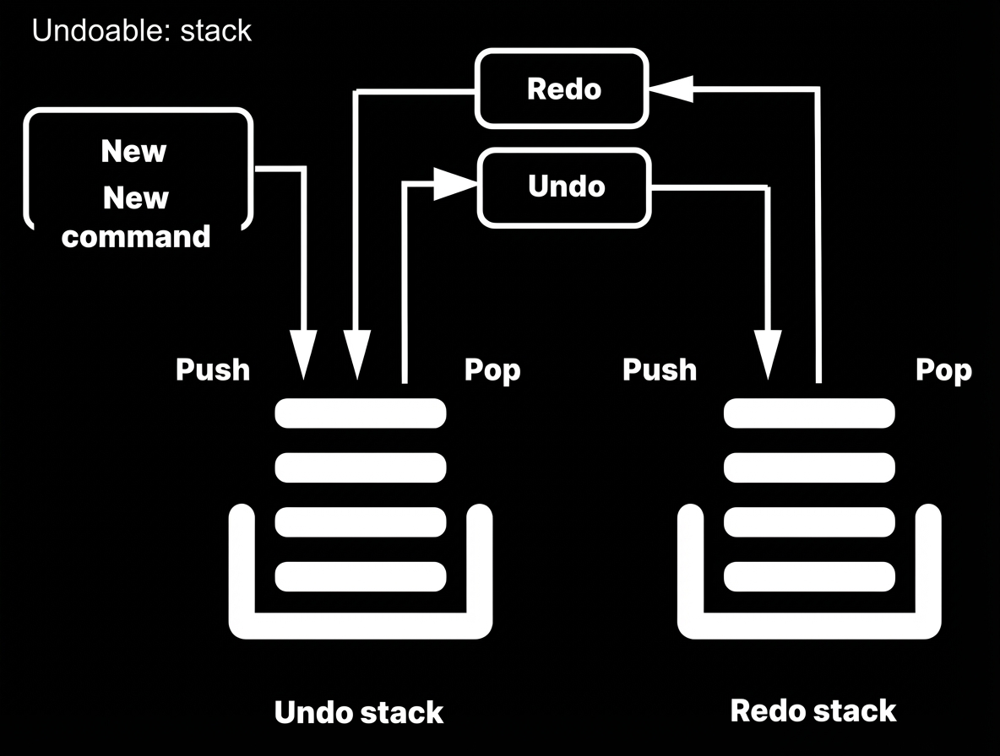
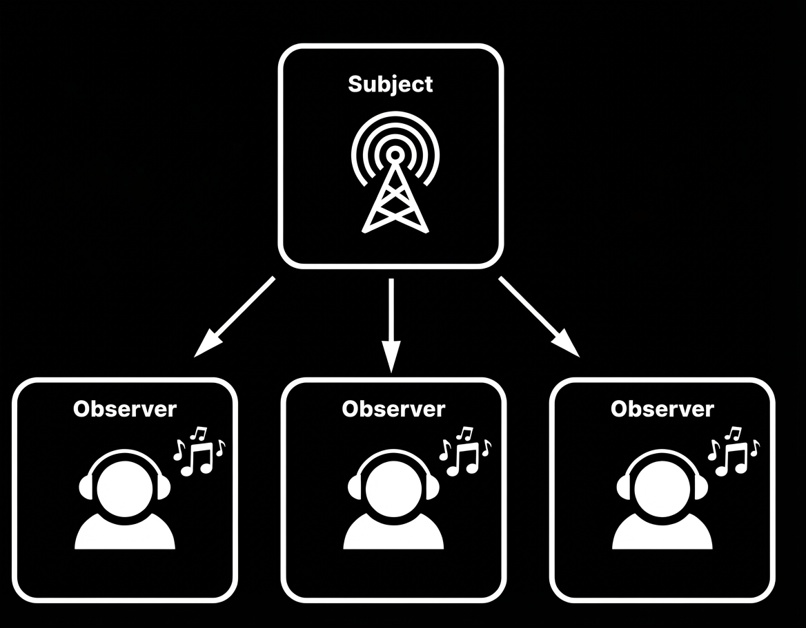
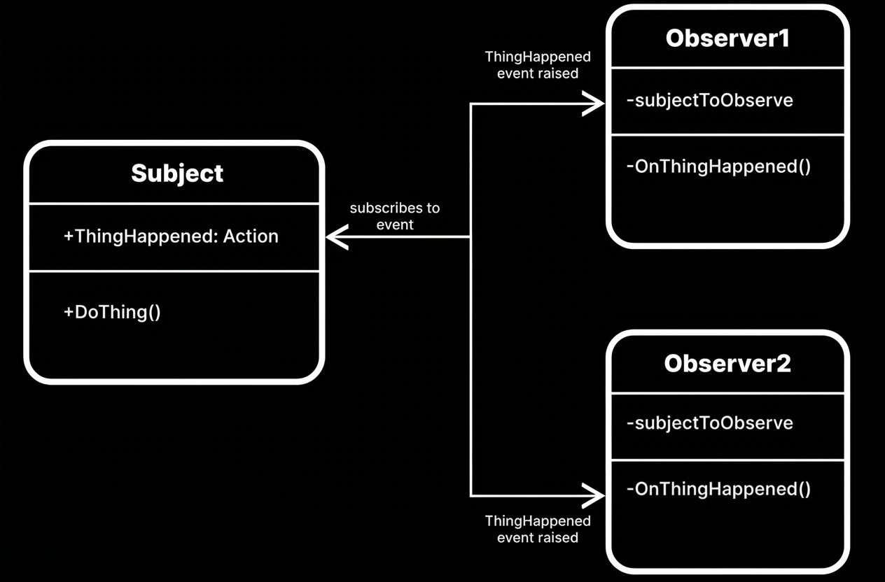

Command & Observer — 게임 실무 적용
요청을 객체의 형태로 캡슐화하여 사용자가 보낸 요청을 나중에
이용할 수 있도록 메서드 이름, 매개변수 등 요청에 필요한 정보를 저장·로깅·취소할 수
있게 하는 패턴.
이 패턴을 통해 실행(Do), 취소(Undo), 재실행(Redo), 명령 큐잉(Queuing),
로깅(Logging), 네트워크 전송(Remote Invocation) 등을 가능하게 하여
명령의 실행 시점과 호출 시점을 분리하고
유연한 명령 제어를 구현할 수 있다.

요청이 인터페이스를 거쳐 커맨드 객체로 포장되고, 히스토리나 버퍼에 쌓인 뒤 Invoker가 실행되는 흐름이다.
Execute()와 선택적으로 Undo()를 선언하는 인터페이스.
모든 구체 커맨드가 이를 구현한다.


커맨드 큐에서 현재 인덱스를 기준으로 Undo와 Redo를 관리하는 구조다. 선형 히스토리 개념을 설명하기 쉽다.

자료구조 스택 두 개로 구현하는 가장 전형적인 형태다. 새 명령은 Undo 스택에 Push되고, Undo 시 Redo 스택으로 이동해 실행 취소와 재실행 흐름을 단순하게 유지할 수 있다.
public interface ICommand
{
void Execute();
void Undo();
}
public class CommandInvoker
{
// Undo용 커맨드 스택
private static Stack<ICommand> s_UndoStack = new Stack<ICommand>();
// Redo 가능한 커맨드를 저장하는 두 번째 스택
private static Stack<ICommand> s_RedoStack = new Stack<ICommand>();
// 커맨드를 즉시 실행하고 Undo 스택에 저장
public static void ExecuteCommand(ICommand command)
{
command.Execute();
s_UndoStack.Push(command);
// 새로운 명령이 실행되면 Redo 이력은 무효화
s_RedoStack.Clear();
}
public static void UndoCommand()
{
// 되돌릴 커맨드가 있으면
if (s_UndoStack.Count > 0)
{
ICommand activeCommand = s_UndoStack.Pop();
s_RedoStack.Push(activeCommand);
activeCommand.Undo();
}
}
public static void RedoCommand()
{
// 다시 실행할 커맨드가 있으면
if (s_RedoStack.Count > 0)
{
ICommand activeCommand = s_RedoStack.Pop();
s_UndoStack.Push(activeCommand);
activeCommand.Execute();
}
}
}ICommand는 Execute와 Undo를 공통 인터페이스로 제공하고, CommandInvoker는 Undo/Redo 스택을 분리해 실행 이력과 재실행 흐름을 함께 관리한다.
하나의 객체(Subject)의 상태 변화가 있을 때, 그 객체와 연관된 다른 객체들(Observer)에게
자동으로 알림(Notify)이 전달되어 상태를 동기화하거나 반응하도록 하는 패턴.
주체와 구독자를 분리하여 느슨한 결합(Loose Coupling)을 달성하고,
이벤트 기반 시스템(Event-Driven Architecture) 구현을 용이하게 한다.
UI 바인딩, 멀티플레이 동기화, MVVM 등 광범위하게 활용된다.

Subject 하나가 여러 Observer에게 같은 시점에 알림을 전파하는 전형적인 브로드캐스트 구조다.
Subscribe(), Unsubscribe()로 구독을 제어하고,
상태 변화 시 Notify()로 모든 Observer에게 알림을 전송한다.
Update() 콜백을 통해 반응한다.
Subject에 대한 직접 참조 없이 느슨하게 결합된다.

public class Subject : MonoBehaviour
{
// 델리게이트로 직접 이벤트 정의
// public delegate void ExampleDelegate();
// public static event ExampleDelegate ExampleEvent;
// 또는 System.Action 사용
public event Action ThingHappened;
// 이벤트 발행 — 모든 구독자에게 전파
public void DoThing()
{
ThingHappened?.Invoke();
}
}
public class ExampleObserver : MonoBehaviour
{
// 관찰 대상 Subject 참조
[SerializeField] Subject subjectToObserve;
// 이벤트 핸들러: Subject의 이벤트 시그니처와 일치해야 함
private void OnThingHappened()
{
// 이벤트에 반응하는 로직 작성
}
private void Awake()
{
// Subject 이벤트 구독 등록
if (subjectToObserve != null)
{
subjectToObserve.ThingHappened += OnThingHappened;
}
}
private void OnDestroy()
{
// 오브젝트 소멸 시 구독 해제
if (subjectToObserve != null)
{
subjectToObserve.ThingHappened -= OnThingHappened;
}
}
}Subject는 ThingHappened 이벤트를 발행하고, ExampleObserver는 Awake에서 구독하고 OnDestroy에서 반드시 해제한다. 구독 해제를 빠뜨리면 메모리 누수가 발생한다.